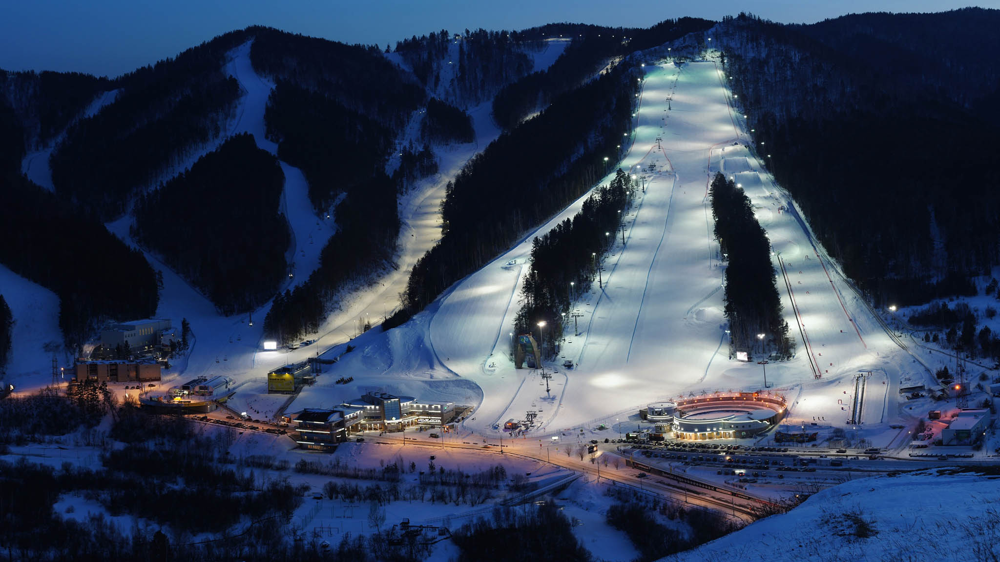

Современная инфраструктура
На территории парка расположены 4 канатные дороги, включая современный гондольный подъемник и кресельные подъемники.

Горнолыжный отдых мирового уровня рядом с заповедником "Столбы"
Забронировать отдыхНа территории парка расположены 4 канатные дороги, включая современный гондольный подъемник и кресельные подъемники.
Более 20 горнолыжных трасс общей протяженностью 35 км: от зеленых маршрутов для новичков до черных трасс для профессионалов.
Специальные зоны для детей, санные трассы, тюбинги и развлечения для всей семьи в уникальной природной зоне.
Парк граничит с известным заповедником, что позволяет совмещать активный отдых с пешими прогулками по уникальным скальным образованиям.